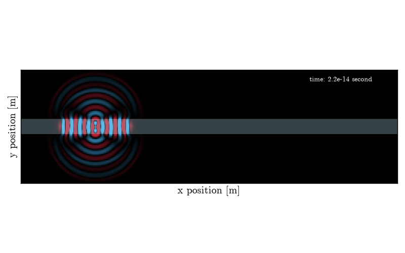

Note
Go to the end to download the full example code.
Waveguide#
Observe guided propagation in one straight dielectric waveguide. The animation is the single result of this example.
Importing the necessary packages
from TypedUnit import ureg
from MPSPlots import colormaps
from LightWave2D.grid import Grid
from LightWave2D.experiment import Experiment
Define the simulation grid
grid = Grid(
resolution=0.1 * ureg.micrometer, # Grid resolution in meters
size_x=50 * ureg.micrometer, # Grid size in the x direction in meters
size_y=15 * ureg.micrometer, # Grid size in the y direction in meters
n_steps=100, # Number of time steps for the simulation
)
# Initialize the experiment with the defined grid
experiment = Experiment(grid=grid)
Add a waveguide to the experiment
scatterer = experiment.add_waveguide(
position_0=("0%", "50%"), # Starting position of the waveguide
position_1=("100%", "50%"), # Ending position of the waveguide
width=2 * ureg.micrometer, # Width of the waveguide in meters
epsilon_r=2, # Relative permittivity of the waveguide
)
# Add a line source to the experiment
source = experiment.add_line_source(
wavelength=1550 * ureg.nanometer, # Wavelength of the source in meters
position_0=("20%", "45%"), # Starting position of the source
position_1=("20%", "55%"), # Ending position of the source
amplitude=10, # Amplitude of the source
)
Add a perfectly matched layer (PML) to absorb boundary reflections
experiment.add_pml(
order=1, # Order of the PML polynomial profile
width="10%", # Width of the PML region as a percentage of grid size
sigma_max=5000 * (ureg.siemens / ureg.meter), # Maximum conductivity for the PML
)
<LightWave2D.pml.PML object at 0x7fb08dd818f0>
Run the FDTD simulation
SimulationResult(Ez_t=array([[[0., 0., 0., ..., 0., 0., 0.],
[0., 0., 0., ..., 0., 0., 0.],
[0., 0., 0., ..., 0., 0., 0.],
...,
[0., 0., 0., ..., 0., 0., 0.],
[0., 0., 0., ..., 0., 0., 0.],
[0., 0., 0., ..., 0., 0., 0.]],
[[0., 0., 0., ..., 0., 0., 0.],
[0., 0., 0., ..., 0., 0., 0.],
[0., 0., 0., ..., 0., 0., 0.],
...,
[0., 0., 0., ..., 0., 0., 0.],
[0., 0., 0., ..., 0., 0., 0.],
[0., 0., 0., ..., 0., 0., 0.]],
[[0., 0., 0., ..., 0., 0., 0.],
[0., 0., 0., ..., 0., 0., 0.],
[0., 0., 0., ..., 0., 0., 0.],
...,
[0., 0., 0., ..., 0., 0., 0.],
[0., 0., 0., ..., 0., 0., 0.],
[0., 0., 0., ..., 0., 0., 0.]],
...,
[[0., 0., 0., ..., 0., 0., 0.],
[0., 0., 0., ..., 0., 0., 0.],
[0., 0., 0., ..., 0., 0., 0.],
...,
[0., 0., 0., ..., 0., 0., 0.],
[0., 0., 0., ..., 0., 0., 0.],
[0., 0., 0., ..., 0., 0., 0.]],
[[0., 0., 0., ..., 0., 0., 0.],
[0., 0., 0., ..., 0., 0., 0.],
[0., 0., 0., ..., 0., 0., 0.],
...,
[0., 0., 0., ..., 0., 0., 0.],
[0., 0., 0., ..., 0., 0., 0.],
[0., 0., 0., ..., 0., 0., 0.]],
[[0., 0., 0., ..., 0., 0., 0.],
[0., 0., 0., ..., 0., 0., 0.],
[0., 0., 0., ..., 0., 0., 0.],
...,
[0., 0., 0., ..., 0., 0., 0.],
[0., 0., 0., ..., 0., 0., 0.],
[0., 0., 0., ..., 0., 0., 0.]]], shape=(100, 500, 150)), recorded_time_stamp=<Quantity([0.00000000e+00 2.35865434e-16 4.71730867e-16 7.07596301e-16
9.43461735e-16 1.17932717e-15 1.41519260e-15 1.65105804e-15
1.88692347e-15 2.12278890e-15 2.35865434e-15 2.59451977e-15
2.83038520e-15 3.06625064e-15 3.30211607e-15 3.53798151e-15
3.77384694e-15 4.00971237e-15 4.24557781e-15 4.48144324e-15
4.71730867e-15 4.95317411e-15 5.18903954e-15 5.42490497e-15
5.66077041e-15 5.89663584e-15 6.13250128e-15 6.36836671e-15
6.60423214e-15 6.84009758e-15 7.07596301e-15 7.31182844e-15
7.54769388e-15 7.78355931e-15 8.01942474e-15 8.25529018e-15
8.49115561e-15 8.72702105e-15 8.96288648e-15 9.19875191e-15
9.43461735e-15 9.67048278e-15 9.90634821e-15 1.01422136e-14
1.03780791e-14 1.06139445e-14 1.08498099e-14 1.10856754e-14
1.13215408e-14 1.15574063e-14 1.17932717e-14 1.20291371e-14
1.22650026e-14 1.25008680e-14 1.27367334e-14 1.29725989e-14
1.32084643e-14 1.34443297e-14 1.36801952e-14 1.39160606e-14
1.41519260e-14 1.43877915e-14 1.46236569e-14 1.48595223e-14
1.50953878e-14 1.53312532e-14 1.55671186e-14 1.58029841e-14
1.60388495e-14 1.62747149e-14 1.65105804e-14 1.67464458e-14
1.69823112e-14 1.72181767e-14 1.74540421e-14 1.76899075e-14
1.79257730e-14 1.81616384e-14 1.83975038e-14 1.86333693e-14
1.88692347e-14 1.91051001e-14 1.93409656e-14 1.95768310e-14
1.98126964e-14 2.00485619e-14 2.02844273e-14 2.05202927e-14
2.07561582e-14 2.09920236e-14 2.12278890e-14 2.14637545e-14
2.16996199e-14 2.19354853e-14 2.21713508e-14 2.24072162e-14
2.26430816e-14 2.28789471e-14 2.31148125e-14 2.33506779e-14], 'second')>, detector_data=array([], shape=(100, 0), dtype=float64), grid=namespace(x_stamp=<Quantity([ 0. 0.1 0.2 0.3 0.4 0.5 0.6 0.7 0.8 0.9 1. 1.1 1.2 1.3
1.4 1.5 1.6 1.7 1.8 1.9 2. 2.1 2.2 2.3 2.4 2.5 2.6 2.7
2.8 2.9 3. 3.1 3.2 3.3 3.4 3.5 3.6 3.7 3.8 3.9 4. 4.1
4.2 4.3 4.4 4.5 4.6 4.7 4.8 4.9 5. 5.1 5.2 5.3 5.4 5.5
5.6 5.7 5.8 5.9 6. 6.1 6.2 6.3 6.4 6.5 6.6 6.7 6.8 6.9
7. 7.1 7.2 7.3 7.4 7.5 7.6 7.7 7.8 7.9 8. 8.1 8.2 8.3
8.4 8.5 8.6 8.7 8.8 8.9 9. 9.1 9.2 9.3 9.4 9.5 9.6 9.7
9.8 9.9 10. 10.1 10.2 10.3 10.4 10.5 10.6 10.7 10.8 10.9 11. 11.1
11.2 11.3 11.4 11.5 11.6 11.7 11.8 11.9 12. 12.1 12.2 12.3 12.4 12.5
12.6 12.7 12.8 12.9 13. 13.1 13.2 13.3 13.4 13.5 13.6 13.7 13.8 13.9
14. 14.1 14.2 14.3 14.4 14.5 14.6 14.7 14.8 14.9 15. 15.1 15.2 15.3
15.4 15.5 15.6 15.7 15.8 15.9 16. 16.1 16.2 16.3 16.4 16.5 16.6 16.7
16.8 16.9 17. 17.1 17.2 17.3 17.4 17.5 17.6 17.7 17.8 17.9 18. 18.1
18.2 18.3 18.4 18.5 18.6 18.7 18.8 18.9 19. 19.1 19.2 19.3 19.4 19.5
19.6 19.7 19.8 19.9 20. 20.1 20.2 20.3 20.4 20.5 20.6 20.7 20.8 20.9
21. 21.1 21.2 21.3 21.4 21.5 21.6 21.7 21.8 21.9 22. 22.1 22.2 22.3
22.4 22.5 22.6 22.7 22.8 22.9 23. 23.1 23.2 23.3 23.4 23.5 23.6 23.7
23.8 23.9 24. 24.1 24.2 24.3 24.4 24.5 24.6 24.7 24.8 24.9 25. 25.1
25.2 25.3 25.4 25.5 25.6 25.7 25.8 25.9 26. 26.1 26.2 26.3 26.4 26.5
26.6 26.7 26.8 26.9 27. 27.1 27.2 27.3 27.4 27.5 27.6 27.7 27.8 27.9
28. 28.1 28.2 28.3 28.4 28.5 28.6 28.7 28.8 28.9 29. 29.1 29.2 29.3
29.4 29.5 29.6 29.7 29.8 29.9 30. 30.1 30.2 30.3 30.4 30.5 30.6 30.7
30.8 30.9 31. 31.1 31.2 31.3 31.4 31.5 31.6 31.7 31.8 31.9 32. 32.1
32.2 32.3 32.4 32.5 32.6 32.7 32.8 32.9 33. 33.1 33.2 33.3 33.4 33.5
33.6 33.7 33.8 33.9 34. 34.1 34.2 34.3 34.4 34.5 34.6 34.7 34.8 34.9
35. 35.1 35.2 35.3 35.4 35.5 35.6 35.7 35.8 35.9 36. 36.1 36.2 36.3
36.4 36.5 36.6 36.7 36.8 36.9 37. 37.1 37.2 37.3 37.4 37.5 37.6 37.7
37.8 37.9 38. 38.1 38.2 38.3 38.4 38.5 38.6 38.7 38.8 38.9 39. 39.1
39.2 39.3 39.4 39.5 39.6 39.7 39.8 39.9 40. 40.1 40.2 40.3 40.4 40.5
40.6 40.7 40.8 40.9 41. 41.1 41.2 41.3 41.4 41.5 41.6 41.7 41.8 41.9
42. 42.1 42.2 42.3 42.4 42.5 42.6 42.7 42.8 42.9 43. 43.1 43.2 43.3
43.4 43.5 43.6 43.7 43.8 43.9 44. 44.1 44.2 44.3 44.4 44.5 44.6 44.7
44.8 44.9 45. 45.1 45.2 45.3 45.4 45.5 45.6 45.7 45.8 45.9 46. 46.1
46.2 46.3 46.4 46.5 46.6 46.7 46.8 46.9 47. 47.1 47.2 47.3 47.4 47.5
47.6 47.7 47.8 47.9 48. 48.1 48.2 48.3 48.4 48.5 48.6 48.7 48.8 48.9
49. 49.1 49.2 49.3 49.4 49.5 49.6 49.7 49.8 49.9], 'micrometer')>, y_stamp=<Quantity([ 0. 0.1 0.2 0.3 0.4 0.5 0.6 0.7 0.8 0.9 1. 1.1 1.2 1.3
1.4 1.5 1.6 1.7 1.8 1.9 2. 2.1 2.2 2.3 2.4 2.5 2.6 2.7
2.8 2.9 3. 3.1 3.2 3.3 3.4 3.5 3.6 3.7 3.8 3.9 4. 4.1
4.2 4.3 4.4 4.5 4.6 4.7 4.8 4.9 5. 5.1 5.2 5.3 5.4 5.5
5.6 5.7 5.8 5.9 6. 6.1 6.2 6.3 6.4 6.5 6.6 6.7 6.8 6.9
7. 7.1 7.2 7.3 7.4 7.5 7.6 7.7 7.8 7.9 8. 8.1 8.2 8.3
8.4 8.5 8.6 8.7 8.8 8.9 9. 9.1 9.2 9.3 9.4 9.5 9.6 9.7
9.8 9.9 10. 10.1 10.2 10.3 10.4 10.5 10.6 10.7 10.8 10.9 11. 11.1
11.2 11.3 11.4 11.5 11.6 11.7 11.8 11.9 12. 12.1 12.2 12.3 12.4 12.5
12.6 12.7 12.8 12.9 13. 13.1 13.2 13.3 13.4 13.5 13.6 13.7 13.8 13.9
14. 14.1 14.2 14.3 14.4 14.5 14.6 14.7 14.8 14.9], 'micrometer')>), components=(<LightWave2D.components.Waveguide object at 0x7fb0870b0030>,), sources=(<LightWave2D.source.LineWaveSource object at 0x7fb0870b0130>,), detectors=(), detector_time_stamp=<Quantity([0.00000000e+00 2.35865434e-16 4.71730867e-16 7.07596301e-16
9.43461735e-16 1.17932717e-15 1.41519260e-15 1.65105804e-15
1.88692347e-15 2.12278890e-15 2.35865434e-15 2.59451977e-15
2.83038520e-15 3.06625064e-15 3.30211607e-15 3.53798151e-15
3.77384694e-15 4.00971237e-15 4.24557781e-15 4.48144324e-15
4.71730867e-15 4.95317411e-15 5.18903954e-15 5.42490497e-15
5.66077041e-15 5.89663584e-15 6.13250128e-15 6.36836671e-15
6.60423214e-15 6.84009758e-15 7.07596301e-15 7.31182844e-15
7.54769388e-15 7.78355931e-15 8.01942474e-15 8.25529018e-15
8.49115561e-15 8.72702105e-15 8.96288648e-15 9.19875191e-15
9.43461735e-15 9.67048278e-15 9.90634821e-15 1.01422136e-14
1.03780791e-14 1.06139445e-14 1.08498099e-14 1.10856754e-14
1.13215408e-14 1.15574063e-14 1.17932717e-14 1.20291371e-14
1.22650026e-14 1.25008680e-14 1.27367334e-14 1.29725989e-14
1.32084643e-14 1.34443297e-14 1.36801952e-14 1.39160606e-14
1.41519260e-14 1.43877915e-14 1.46236569e-14 1.48595223e-14
1.50953878e-14 1.53312532e-14 1.55671186e-14 1.58029841e-14
1.60388495e-14 1.62747149e-14 1.65105804e-14 1.67464458e-14
1.69823112e-14 1.72181767e-14 1.74540421e-14 1.76899075e-14
1.79257730e-14 1.81616384e-14 1.83975038e-14 1.86333693e-14
1.88692347e-14 1.91051001e-14 1.93409656e-14 1.95768310e-14
1.98126964e-14 2.00485619e-14 2.02844273e-14 2.05202927e-14
2.07561582e-14 2.09920236e-14 2.12278890e-14 2.14637545e-14
2.16996199e-14 2.19354853e-14 2.21713508e-14 2.24072162e-14
2.26430816e-14 2.28789471e-14 2.31148125e-14 2.33506779e-14], 'second')>, flux=(), field_path=None)
Animate guided propagation.
animation = experiment.render_propagation(
skip_frame=5, # Number of frames to skip in the animation
colormap=colormaps.polytechnique.red_black_blue, # Colormap for the animation
enhance_contrast=4, # Enhance contrast for better visualization
save_as="./waveguide.gif", # Save the animation as a GIF file
fps=30,
)

Total running time of the script: (0 minutes 1.852 seconds)